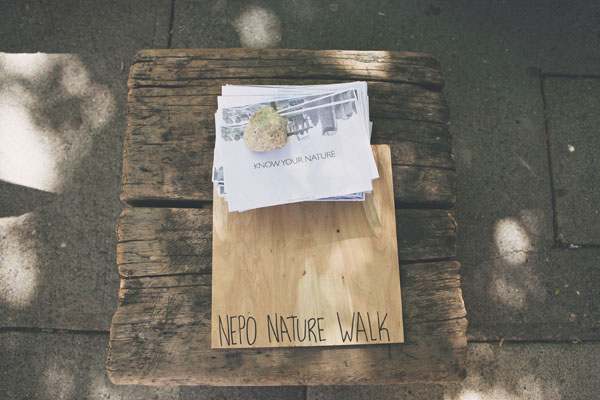
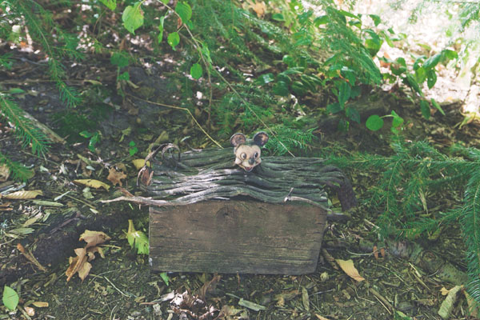
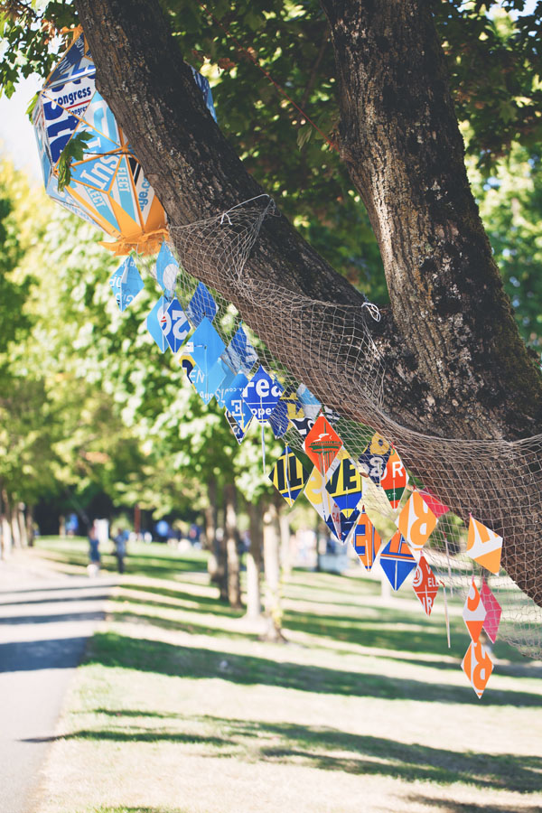
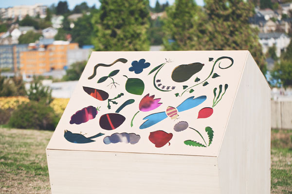
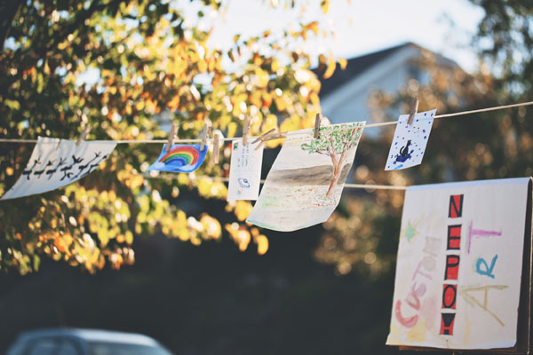
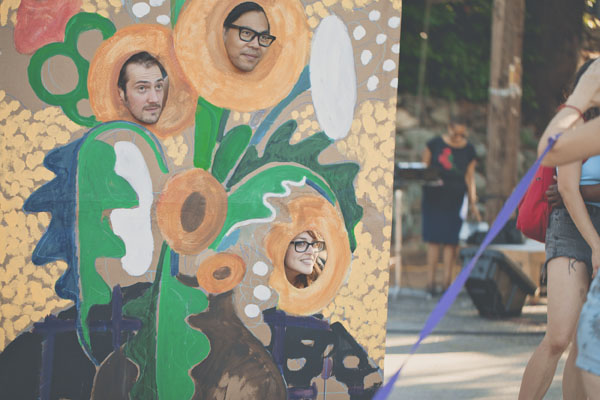
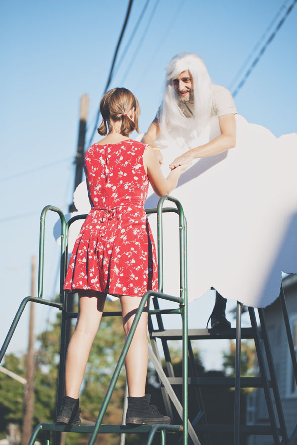

Just go and ...DON'T STOP!
Except - not so fast. First you had to listen to a list of disclaimers and liabilities recited by our two lawyers MC's Willie Fitzgerald and Sarah Galvin.
Some thought it was funny, but this was a serious business. Under no circumstances assist someone asking you to move their furniture. For example. Btw, did they mentioned not to ride that tram? If they didn't they really should have...
Ok, now that we are clear - you can go. (* Proceed at your own risk)
It is a very good thing that Sierra Nelson and Rachel Kessler from the Vis-a-Vis Society created WALL OF WORDS once again, because NEPO 5k wouldn't be NEPO 5k without them. That's the truth.
Participants chose their own original racing word/number to pin on themselves for the course. This year the words were printed on real official-looking marathon racing bibs!
The theme was: nouns that repeat, begin again, or don't stop (like palindromes, things that repeat cyclically, like seasons or years or periods, or NEPO 5k, etc. etc. x 1000 - no biggie. Right. Plus their head-banging instructional video was a riot.
In Hing Hay park, artists Ruben David created Be Fit For More Than You Are Now Doing 1927 - 2017 - a large-scale interactive carnival cutout depicting Garfield High School's 1927 track team.
Akiko Masker dressed in traditional Japanese kimono instructed participants on how to create green bento box as part of her Go Green Bento performance piece.

Know Your Nature, A Nepo 5k Walking Guide to Plant Life - a limited-run zine by Alexa Anderson, Estee Clifford and Corey Kingston
Calie Swedberg pulled up her chair to a local hang out on King Street and patiently performed how to hold and care for precious things.
Mel Carter, Anna Erickson, Ripple Fang and co. (a.k.a. Cutie Beauty's "And Friends") created what felt like life-size board game under the freeway underpass. Titled Tea-Sometimes-Party (Un-Holiday Jubilee) feat, this interactive performance piece included karaoke, tea bag toss, puppet show and a completely self-sufficient candy economy.
Keeara Rhoades and her Cutie Beauty & Her Cub-Sometimes-Cat in a Cave Pram. Here pictured: the young cub outside the pram.
Feed the candy down the tube for a 30 sec puppet show.
Kintsukuroi by Joana Stillwell and Yael Nov. Broken ceramic objects and golden stones - shining light on what's broken in our throwaway culture.
Cloak - a large wheatpaste mural by Megumi Shauna Arai.
Coil IV - coiled, looping cast plaster in piles by Francesca Lohmann.
Nathaniel Russell's Flyers made an appearance again in unexpected places.
Beautiful NEPO poster by Jonathan Horn.
Fruit Machine - an interactive installation in by Samuel Wildman in the back of a rented box truck. BYOQ! Win Big!
An installation by Reilly Sinanan - Untitled (Ike). A small weather-worn row boat tethered to a free standing wall.
Adam Boehmer's WONDER
Kristin Schimik building her clay Interchange under the Jose Rizal Bridge.
Bounce by Rebecca Cummins. A series of round mirrors reflecting the blue sky above.
Meanwhile above on the bridge: Epic Friendship
Aaron Murray's The hermitage was tucked away just off the trail in the Lewis park.
Aaron built a hermit house and a museum. All objects were made from locally sourced materials and loosely inspired by the Hermitage Museum in Russia.

RAINBOW POWER Spirit Gate by Joey Veltkamp and Ben Gannon. Balloons were popping at unprecedented rate perhaps due to powerful spiritual forces.
Repose - colorful cushion sculpture by Nicholas Nyland.
Sneaky sneaking around. Mobile sculptures by Meadow starts with p.
Plein Air Project(ed) by Cable Griffith. A projection under the umbrella shows a live video feed of Cable painting in his Beacon Hill Studio. An absurd action highlighting our increasing physical disconnect with place and location.
Ve-uews: crafty Scyence by Julia Freeman. Part of her ongoing NEPO 5k series exploring the invisible act of creation. Booths tucked into a wooded area invited participants to kneel down and have their souls painted by professional artists using the melted crayon process frequently used in pre-school classrooms. The artists themselves are hidden behind one way mirrors - only their hands are visible to the viewers.

And here comes the trouble with tram. Beacon/Capitol Hill Express Tram by Kathryn Rathke and Barry Wright was everything but relaxing, there were sheep problems, telegrams from mother problems and art thievery to deal with. No one got anywhere fast. Simply put their motto "Ride and Relax™" couldn't be further from truth.

Small things inhabiting a rock by Rumi Koshino.
Someone please tell us: what is this and who is this?
Snack Trees by Saya Moriyasu. Testing participant's knowledge of Seattle's growing climate, Saya converted several trees in Daejeon park into fruit trees. A fine example of art's ability to feed both body and soul.
Chromatic Encounters by Elizabeth Gahan.

The Future Looks Bright by Colleen RJC Bratton - encouraging patrons to rest their feet on a flat replica of NEPO House, marking a half way point to the final destination.
Parcelain plantations by Sylwia Tur.
The Underground Art Scene in Seattle by Trevor Brown.
Tribes Project performed vignettes from Oresteia Ubuntu in the pagoda in Daejeon park. Reworking a Greek classic, Oresteia Ubuntu incorporates contemporary and traditional South African song and dance, masks designed by a South African artisan, and a 21st century storytelling inspired by South African and American people's history.

The Garden of Light by Amanda James Parker.


Ora et Labora - minimal space for a human constructed by Marek Stepan from banana boxes.

A sunny Saturday in the park turned into Sunday/Funday by Neuroses.
Intercession by Ashleigh Robb and Ivana Kartzov - the frozen orbs containing objects gathered from the site had melted really fast.
Eirik Johnson built an audio visual installation A waypoint to Crescent Lake. His reconstruction of commercial mushroom hunter's cabin included audio of ambient sounds recorded during numerous visits to the mushroom camps of Cascade Mountains.
The Threshold by OHM - an electromechanical assembly opening the gate and allowing passage from Daejeon park to Beacon Hill neighborhood.
Pharmakon by Maggie Carson Romano - cracks in the pavement leafed with 24K gold.
Participants watching INSIDE OF NOTHING a video installation by Kat Larson.
Composers John Teske and Nat Evans created a site-specific soundscape called Antiphonal Location. Brass ensemble scattered along an entire city block performed a collection of short scores, each player adjusting their locations in dialogue with the others.

Chris Burnside's Untitled sculpture of multiple twisting, angular metal forms was suspended above an overgrown vacant lot.

A stubborn leftover from last year: a museum-style label by PDL still in place in the neighbor's bushes.
Another piece by Francesca Lohmann Coil III.
Ilysia Van Deren: Are my cracks showing? An eggshell waterfall spilling out of a ivy-covered wall.
Ken Turner's photo-sculpture titled Viewpoint.
Eric Aguilar performing I guess nobody ever told you // All you must hold onto // Is you, is you, is you. As a modern-day Sisyphus, Eric moved a seven foot pile of emotionally charged items from his household up and down the staircase on 18th Ave S. He was trying to excavate a sense of self from under a giant pile of stuff he thought he couldn't live without.

A spontaneous art station by Avalanche + the Diffuser
A video projection titled Heartbeats by Rafael Soldi.
Glenn Herlihy's interactive piece Thought Placement evaporated bad thoughts and preserved (canned) good thoughts. Doing a lot of good in the world.
Mini billboards advertising Nelson's Nut Hut - a fast food restaurant for squirrels by Greg Lundgren.
Twin Paradox - an installation by Gala Bent and Nick Strobelt.


A free-standing painting with face cut-out photo-op at the finish line by Matthew Offenbacher.

"And yeah, yeah, God is great, Yeah, yeah, God is good, Yeah, yeah, yeah, yeah, yeah"
Graham Downing playing god and a game of slaps with NEPO participants.

Neighborhood kids selling water at the finish line.
Our awesome sound guy Kaz.
Alice Gosti (left) curated a super cool set of performances at the finish line.
People big and small having fun drawing on Petra Franklin's Boomerang.
DJ Sharlese played a couple sets welcoming weary don't runners.
Ariana Bird's and Alissa Pegram's fun performance at the finish line.
Peter Donnelly of Neuroses working the finish line crowd.
Andrew Hall of Dude York. They performed a short set followed by Chastity Belt. (more coming on video)
Some neighborhood fairies running around at the end of a long day: Naschledanou! Hasta la vista! Auf Wiedersehen!
Good bye till next time NEPO 5k!
Good bye till next time NEPO 5k!
-------------------------------------------------------------------------
Photos by Kari Champoux and Chip Rountree.
-------------------------------------------------------------------------
Curated by Klara Glosova, Sierra Stinson, Zack Bent an Serrah Russell
Some nice reviews this year:
NEPO 5k Don't Run 2014 by Amanda Manitach for City Arts Magazine
The Monster Art Show With the Soft Underbelly: What Happened at NEPO 5K on Saturday by Jen Graves for The Stranger
Why run when you can walk? Seattle's NEPO 5k Walk Don't Run 2014 by Suzanne Beal for the Sculpture Magazine
Don't miss next year - sign up for our mailing list.
All content © NEPO House 2014